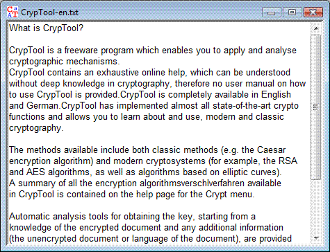
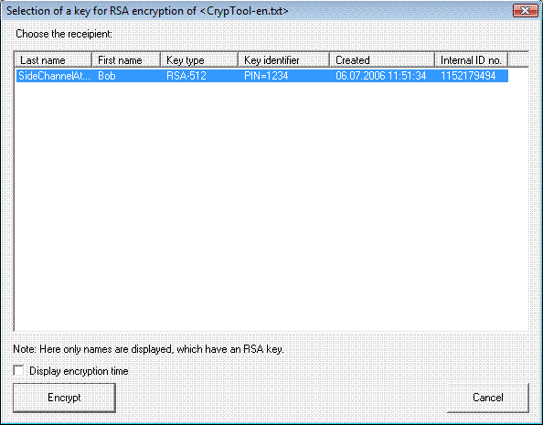
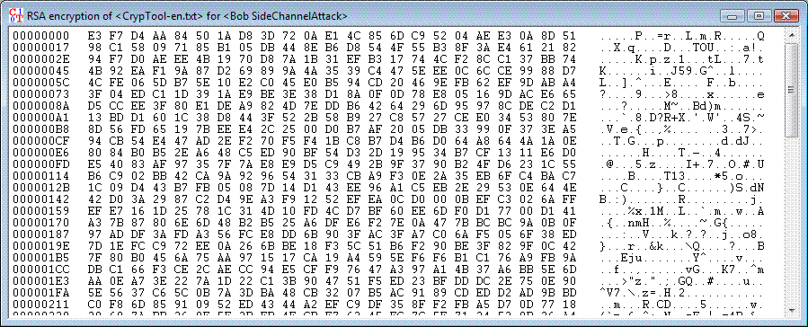
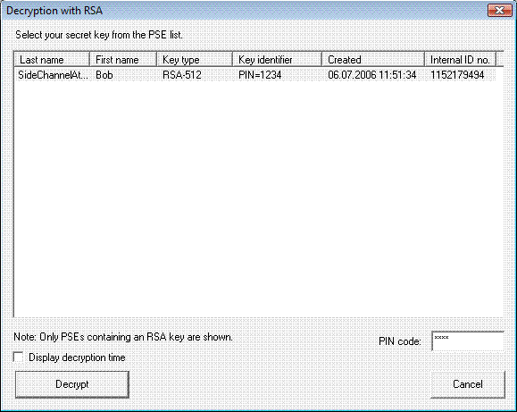
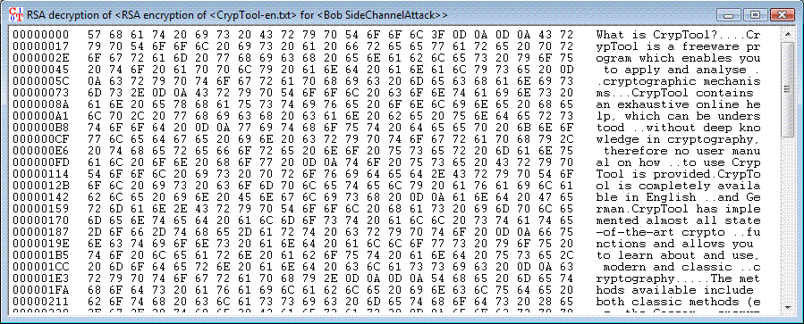

This section provides an example which illustrates the use of the RSA algorithm for encryption and decryption. To make it easier to follow the steps that need to be performed with CrypTool, the example is illustrated with a number of screenshots.
The encryption and decryption will be demonstrated by applying it to a text document.
At first we load a part of the help text for CrypTool, "Introduction to CrypTool", which is contained in the file "CrypTool-en.txt". To open this document in CrypTool, select the menu File \ Open.

To initiate the encryption use RSA Encryption in the menu Encrypt/Decrypt \ Asymmetric.

To start the encryption you have to choose the receiver (which includes his public key) and to click on the button Encrypt. For the encryption no PIN code is necessary.
The following window shows the result of the encryption.

Decryption of the document can be done via the item RSA Decryption in the menu Encrypt/Decrypt \ Asymmetric.
Asymmetric decryption can only be done by an authorized person: Therefore for decryption in contrast to the encryption you have to enter a PIN.

The cleartext then appears in the window for textual input and output. The follwing window shows the result.
